Introduction to R: Session 04
June, 20 2024 (Version 0.3)
All contents are licensed under CC BY-NC-ND 4.0.
1 Working with ‘real’ data
R is a powerful tool, not only for analysis, but also for managing data.
1.1 Reproducible data management
- Avoid any steps in spreadsheet-software as MS Excel that are done ‘by hand’, and that are non-reproducible.
- Workflow A:
- Generate an R-Script
01_datamanagement.Rthat loads your data and does all the steps, and returns an objectdfthat is used for any further steps. - Run this file using
source(01_datamanagement.R).
- Generate an R-Script
- Workflow B: Generate a markdown file that not only does the above, but also documents all your steps (A brief intro to markdown in Session 05).
1.2 Preparatory steps prior R
Data management in R begins with loading the data into R. But before we think about the technical way in which we read our data into R, we should first ensure that they are ‘prepared’ for this import. If we neglect a few basic rules in this preparatory work, we actually only hold back problems (for which we then only have to find unnecessarily ‘complicated’ solutions in R).
- The first line of the data frame is reserved for the variable names: If we set
header = TRUE(R functionsread.csv ()orread.table ()) the first line in the data frame becomes for the variable names recycled. - The first column(s) should be used to define the observation unit: Tree ID (, plot ID, …). Prefer to keep this information separate: combining several variables (in R) is easier than splitting one variable into several variables.
1.3 Variable names
- Avoid variable names, values, or cells with spaces. If ignored – and not adequately handled during data import – each word is treated as a (value of) a separate variable. This leads to errors that are always related to the fact that the number of elements varies between the lines (matrix ‘behavior’ of the data frame).
- If several words are to be put together, ideally use underscores, eg.
Count_per_ha(Alternatively, you can also use dots –Count.per.ha–, or start every single word with a capital letter –CountPerHa). - Decide on a rule and try to stick to it!
- Functions like
tolower,gsub ()andstringsplitare useful helpers to quickly carry out repairs in R. - Make sure that all missing values – especially empty cells – are marked with
NA. - Delete all free text comments (this only leads to extra columns or an inflation of
NAs).
1.4 Preparatory Work in R
Before reading in a data frame, you have to tell R where the file can be found.
- To achieve this, it can be helpful to find out which working directory R is currently accessing:
- If different from the storage location of the data frame, we have to change this working directory:
By executing this function call, R now knows in which working directory we want to work.
For RStudio users
It is very helpful to save the current .R code file and the data frame in the same directory: At the beginning of a working session, you can then click on Session \(\rightarrow\) Set Working Directory \(\rightarrow\) To Source File Location (this also facilitates collaboration).
Spreadsheet software (such as MS Excel) allows data frames to be saved in many different file formats:
The most popular non-standard formats (i.e. not
.xlsor.xlsx) to save a data frame are.csv(for comma-separated value) and.txt(tab-separated text file).Depending on this choice, a line’s contents are either separated by commas or tabs (referred to as ‘separation argument’).
Attention: Under operating systems with German language setting, commas are the default setting for the argument to represent decimal numbers. Here it is necessary to change the default values for the arguments
sepanddectosep = "; "anddec = ", "(required inread.table(),read.csv()andread.csv2(); see also the next sections).
1.5 read.table()
If the data was saved in the above-mentioned tab-separated text format .txt, the function read.table() is a simple way of importing data:
By previously defining the working directory (
setwd ()), the dataser can be imported directly by specifying the file name.The value of the
headerargument can be used to determine whether the first line of the dataframe contains the variable names (TRUEis the default value here).The separation argument
sepis set to the value"", since theread.tablecommand is defined for tab-separated text formats.
To specify a different separation argument, the value of the argument sep must be changed:
1.6 read.csv() and read.csv2()
The functions read.csv() and read.csv2() can be used to read data files in .csv (Comma Separated Values) format.
.csvdataframes can be easily imported into R and are therefore a preferred format.read.csv()andread.csv2()use different separation arguments: forread.csv()the comma, forread.csv2()the semicolon (open your data frame in a text editor in order to quickly find out your separation argument).read.csv()andread.csv2()are special cases ofread.table(): This means that the arguments forread.table()can alternately also be used forread.csv()andread.csv2().read.csv()andread.csv2()are very similar toread.table()and differ fromread.table()in only three aspects:- The separation argument
sep, - he argument
headeris always set toTRUE, and - the argument
fillis alsoTRUE, which means that if lines have unequal lengths,read.csv()andread.csv2()will always fill the short lines with empty cells.
- The separation argument
1.7 Factors
Working with factors:
In recent R versions, data imports with stringsAsFactor = FALSE as default, which is good:
- Check the structure of the data frame with the help of
str(): Were variables imported as strings (classchr) and not as numeric (classnum) as expected? If so, check the characteristics of these variables for incorrect values withunique()orxtabs(). - Also check with
unique()orxtabs()the characteristics of the variables that were planned to be read in aschr: Typing errors can easily lurk here as well. - Use
df$var <- as.factor(df$var)to finally assign thefactorclass to variablevar.
1.8 attach, subset and merge
Never say never but never use attach().
… use a short name for the data frame object (e.g. df) to keep typing to a minimum!
The function merge(data_set1, data_set2, by, ...) can be used to link two data frames using a key variable:
library("plyr")
dd <- ddply(drought, c("species"), summarize,
mean_bair = mean(bair),
sd_bair = sd(bair),
mean_elev = mean(elev),
sd_elev = sd(elev))
head(merge(drought, dd, by = c("species")))## species bair elev mean_bair sd_bair mean_elev sd_elev
## 1 Beech 0.697 475.0 0.8152727 0.2159037 804.3182 277.0922
## 2 Beech 0.606 480.0 0.8152727 0.2159037 804.3182 277.0922
## 3 Beech 0.718 507.5 0.8152727 0.2159037 804.3182 277.0922
## 4 Beech 0.480 580.0 0.8152727 0.2159037 804.3182 277.0922
## 5 Beech 0.822 750.0 0.8152727 0.2159037 804.3182 277.0922
## 6 Beech 0.944 780.0 0.8152727 0.2159037 804.3182 277.0922subset can be used to split a dataframe according to the result of a logical comparison:
## [1] 1 6br <- seq(tmp[1] * 250, (tmp[2] + 1) * 250, by = 250)
drought$elev_cut <- cut(drought$elev, breaks = br)
sdf <- subset(drought, elev_cut == "(500,750]" & species == "Beech")
sdf## bair elev species elev_cut
## 26 0.718 507.5 Beech (500,750]
## 27 0.480 580.0 Beech (500,750]
## 28 0.822 750.0 Beech (500,750]2 Descriptive analysis for univariate samples
2.1 Continuously scaled variable
2.1.1 Location
mean,weighted.meanmedian,quantile(calculates percentilesprobs = seq(0, 1, by = .01), and quartiles forprobs = c(.25, .5, .75))summary(returns:min, 1st quartile,median,mean, 3rd quartile,max)
2.1.2 Exercises
drought$species <- as.factor(drought$species)
## mean:
mean(drought$bair)
## weighted mean:
tmp <- nrow(drought)/table(drought$species)
tmp <- data.frame(species = factor(levels(drought$species), levels = levels(drought$species)),
w = as.numeric(tmp))
tmp <- merge(drought[, c("species", "bair")], tmp, by = "species")
tmp$w <- tmp$w/sum(tmp$w)
aggregate(x = tmp[, c("w")], by = list(tmp$species), FUN = sum)
weighted.mean(tmp$bair, w = tmp$w)
rm(tmp)
## median:
median(drought$bair)
## quartiles:
quantile(drought$bair, probs = c(.25, .5, .75))
## summary:
summary(drought$bair)Mode: A sample of a continuously scaled variable doesn’t have a mode:
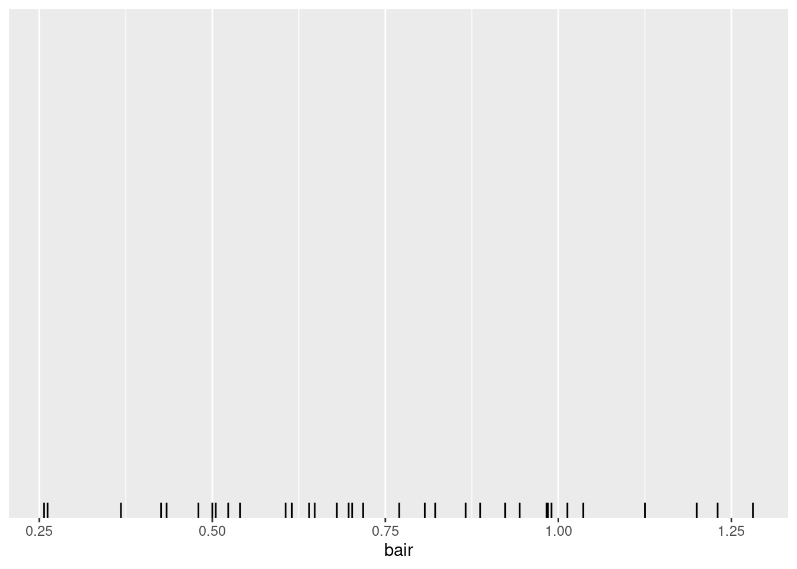
… but the density of such a variable might have a maximum.
So we cannot calculate a mode, but with using techniques such as kernel density estimation – ggplot-geom geom_density – the location of the maximum density can be estimated.
2.1.3 Scale / variation
Methods to describe the scale / variation:
range(calculatesminandmax)var(variance)sd(standard deviation)mad(‘median absolute deviation’, functionmad(x)is just a more general implementation ofmedian(abs(x - median(x))))IQR(interquartile range)
Argument na.rm = TRUE removes all missing values in advance!
2.1.4 Exercises
## function (x, center = median(x), constant = 1.4826, na.rm = FALSE,
## low = FALSE, high = FALSE)
## {
## if (na.rm)
## x <- x[!is.na(x)]
## n <- length(x)
## constant * if ((low || high) && n%%2 == 0) {
## if (low && high)
## stop("'low' and 'high' cannot be both TRUE")
## n2 <- n%/%2 + as.integer(high)
## sort(abs(x - center), partial = n2)[n2]
## }
## else median(abs(x - center))
## }
## <bytecode: 0x57d260503bc8>
## <environment: namespace:stats>## [1] 0.21150000 0.21150000 0.27400800 0.07508039 0.446000002.2 Categorically scaled variables
table as ‘standard function’ for absolute frequency distribution, xtabs as an alternative with formula syntax (and labeling with variable names if table is created from data set).
… while preparing, this section somehow got longer and longer. For a general introduction to R, at some point, when you feel like it, just move on to next section on bivariate sample.
2.2.1 One dimensional:
##
## Beech Spruce
## 11 23## drought$species
## Beech Spruce
## 11 23## species
## Beech Spruce
## 11 23addNA and useNA show slightly different behavior:
## tmp
## Beech Spruce
## 11 23##
## Beech Spruce
## 11 23## tmp
## Beech Spruce <NA>
## 11 23 1##
## Beech Spruce <NA>
## 11 23 0## tmp
## Beech Spruce <NA>
## 11 23 1## drought$species
## Beech Spruce
## 11 23## tmp
## Beech Spruce <NA>
## 11 23 1Visualisation:
ggplot(data = as.data.frame(xtabs(~ species, data = drought))) +
geom_point(aes(x = species, y = Freq)) +
expand_limits(y = 0)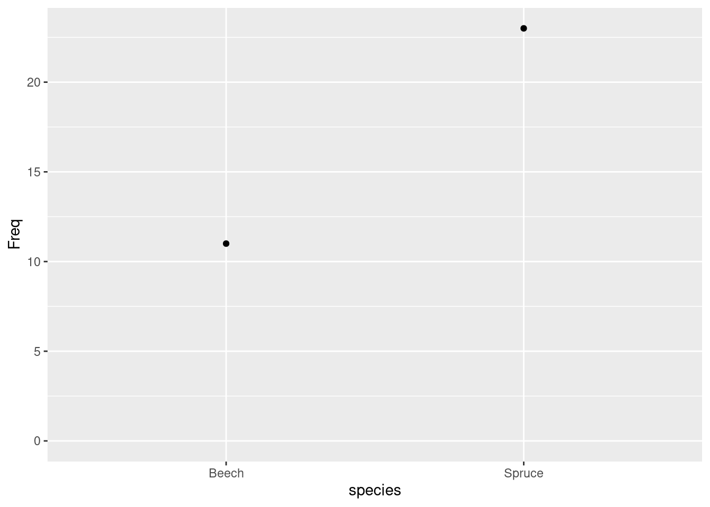
2.2.2 Two dimensional
… this illustrational example shows bad scientific practice since we cut continuous variables into binary categories, and by this bin a lot of valuable information!
tmp <- data.frame(species = drought$species)
tmp$elevation <- cut(drought$elev, breaks = sort(c(range(drought$elev), 1000)), include.lowest = T, dig.lab = 4)
tmp$bair <- cut(drought$bair, breaks = sort(c(range(drought$bair), 1)), include.lowest = T)
table(tmp$bair, tmp$elevation) ## ... (a bit) lost.##
## [335,1000] (1000,1540]
## [0.257,1] 19 9
## (1,1.28] 0 6## elevation
## bair [335,1000] (1000,1540]
## [0.257,1] 19 9
## (1,1.28] 0 6Default plot (see add-on package ggmosaic for a ggplot alternative):
## elevation
## bair [335,1000] (1000,1540]
## [0.257,1] 19 9
## (1,1.28] 0 6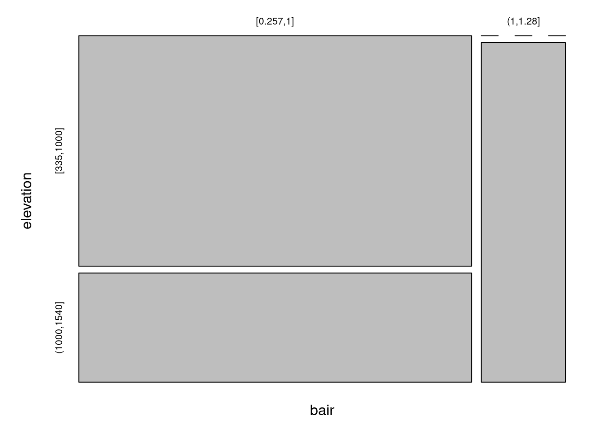
# install.packages("ggmosaic")
library("ggmosaic")
ggplot(data = tmp) +
geom_mosaic(aes(x = product(elevation, bair),
fill = elevation))## Warning: The `scale_name` argument of `continuous_scale()` is deprecated as of ggplot2
## 3.5.0.
## This warning is displayed once every 8 hours.
## Call `lifecycle::last_lifecycle_warnings()` to see where this warning was
## generated.## Warning: The `trans` argument of `continuous_scale()` is deprecated as of ggplot2 3.5.0.
## ℹ Please use the `transform` argument instead.
## This warning is displayed once every 8 hours.
## Call `lifecycle::last_lifecycle_warnings()` to see where this warning was
## generated.## Warning: `unite_()` was deprecated in tidyr 1.2.0.
## ℹ Please use `unite()` instead.
## ℹ The deprecated feature was likely used in the ggmosaic package.
## Please report the issue at <https://github.com/haleyjeppson/ggmosaic>.
## This warning is displayed once every 8 hours.
## Call `lifecycle::last_lifecycle_warnings()` to see where this warning was
## generated.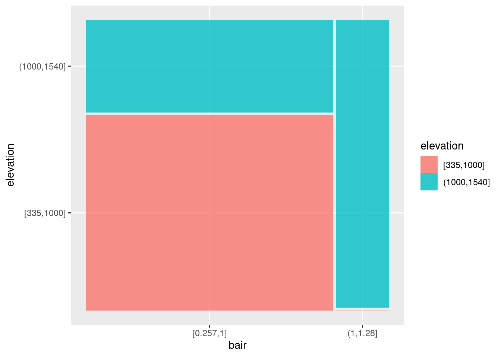
2.2.3 addmargins, margin.table, and prop.table
One dimensional:
##
## [0.257,1] (1,1.28] Sum
## 28 6 34## [1] 34##
## [0.257,1] (1,1.28]
## 0.8235294 0.1764706## [1] 1Two dimensional:
##
## [0.257,1] (1,1.28] Sum
## [335,1000] 19 0 19
## (1000,1540] 9 6 15
## Sum 28 6 34## [1] 34##
## [335,1000] (1000,1540]
## 19 15##
## [0.257,1] (1,1.28]
## 28 6##
## [0.257,1] (1,1.28]
## [335,1000] 0.5588235 0.0000000
## (1000,1540] 0.2647059 0.1764706##
## [0.257,1] (1,1.28]
## [335,1000] 1.0 0.0
## (1000,1540] 0.6 0.4##
## [0.257,1] (1,1.28]
## [335,1000] 0.6785714 0.0000000
## (1000,1540] 0.3214286 1.0000000## [1] 1##
## [0.257,1] (1,1.28] Sum
## [335,1000] 0.5588235 0.0000000 0.5588235
## (1000,1540] 0.2647059 0.1764706 0.4411765
## Sum 0.8235294 0.1764706 1.0000000##
## [0.257,1] (1,1.28] Sum
## [335,1000] 1.0 0.0 1.0
## (1000,1540] 0.6 0.4 1.0
## Sum 1.6 0.4 2.0##
## [0.257,1] (1,1.28] Sum
## [335,1000] 0.6785714 0.0000000 0.6785714
## (1000,1540] 0.3214286 1.0000000 1.3214286
## Sum 1.0000000 1.0000000 2.0000000##
## [0.257,1] (1,1.28] Sum
## [335,1000] 1.0 0.0 1.0
## (1000,1540] 0.6 0.4 1.0##
## [0.257,1] (1,1.28]
## [335,1000] 0.6785714 0.0000000
## (1000,1540] 0.3214286 1.0000000
## Sum 1.0000000 1.00000002.2.4 Applied example
## Session 03:
overlap_seq <- function(x, delta) {
tmp <- x %/% delta
tmp2 <- x %% delta
if (tmp2[which.max(x)] == 0) {
result <- delta * (min(tmp, na.rm = T):max(tmp, na.rm = T))
} else {
result <- delta * (min(tmp, na.rm = T):(max(tmp, na.rm = T) + 1))
}
return(result)
}
tmp$elevCut <- cut(drought$elev, breaks = overlap_seq(x = drought$elev, delta = 250), dig.lab = 4)
tmp$bairCut <- cut(drought$bair, breaks = overlap_seq(x = drought$bair, delta = .25))
(xtab <- xtabs(~ elevCut + bairCut + species, data = tmp))## , , species = Beech
##
## bairCut
## elevCut (0.25,0.5] (0.5,0.75] (0.75,1] (1,1.25] (1.25,1.5]
## (250,500] 0 2 0 0 0
## (500,750] 1 1 1 0 0
## (750,1000] 0 0 2 0 0
## (1000,1250] 0 1 1 2 0
## (1250,1500] 0 0 0 0 0
## (1500,1750] 0 0 0 0 0
##
## , , species = Spruce
##
## bairCut
## elevCut (0.25,0.5] (0.5,0.75] (0.75,1] (1,1.25] (1.25,1.5]
## (250,500] 0 3 0 0 0
## (500,750] 4 1 1 0 0
## (750,1000] 1 1 1 0 0
## (1000,1250] 1 2 2 1 1
## (1250,1500] 0 0 1 2 0
## (1500,1750] 0 0 1 0 0## bairCut
## elevCut (0.25,0.5] (0.5,0.75] (0.75,1] (1,1.25] (1.25,1.5] Sum
## (250,500] 0.00 100.00 0.00 0.00 0.00 100.00
## (500,750] 33.33 33.33 33.33 0.00 0.00 100.00
## (750,1000] 0.00 0.00 100.00 0.00 0.00 100.00
## (1000,1250] 0.00 25.00 25.00 50.00 0.00 100.00
## (1250,1500]
## (1500,1750]
## Sum## bairCut
## elevCut (0.25,0.5] (0.5,0.75] (0.75,1] (1,1.25] (1.25,1.5] Sum
## (250,500] 0.00 100.00 0.00 0.00 0.00 100.00
## (500,750] 66.67 16.67 16.67 0.00 0.00 100.00
## (750,1000] 33.33 33.33 33.33 0.00 0.00 100.00
## (1000,1250] 14.29 28.57 28.57 14.29 14.29 100.00
## (1250,1500] 0.00 0.00 33.33 66.67 0.00 100.00
## (1500,1750] 0.00 0.00 100.00 0.00 0.00 100.00
## Sum 114.29 178.57 211.90 80.95 14.29 600.00par(mfrow = c(1, 1), mar = c(0, 0, 0, 0) + .1)
plot(xtabs(~ species + elevCut + bairCut, data = tmp), las = 2, off = 5, main = "",
col = colorspace::divergingx_hcl(n = length(levels(tmp$bairCut)), rev = T))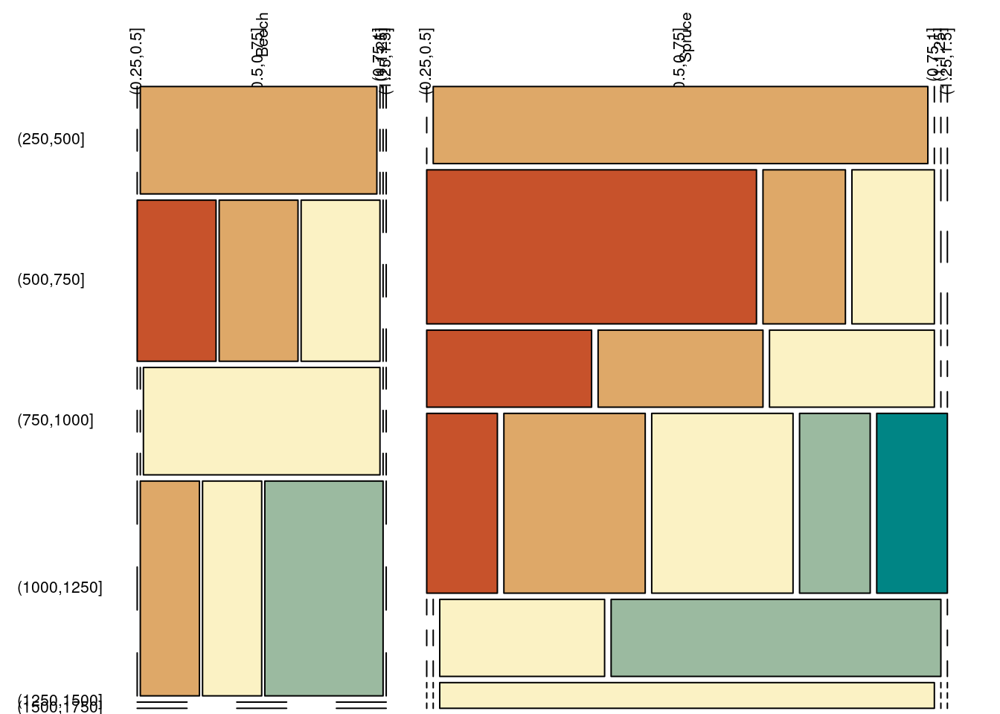
3 Bivariate samples
A bivariate sample is a set of observation units, for which each has two characteristics that have been measured.
## [,1] [,2]
## [1,] 0.2875775 0.0455565
## [2,] 0.7883051 0.5281055
## [3,] 0.4089769 0.8924190
## [4,] 0.8830174 0.5514350
## [5,] 0.9404673 0.4566147## [1] 0.2875775 0.7883051 0.8924190 0.8830174 0.9404673corfor correlation coefficient,covfor (variance) covariance (matrix).
## [1] 0.6174439## x y
## x 0.07508039 0.05579038
## y 0.05579038 0.10874194## [1] 0.05579038 0.07508039 0.108741944 Probability distribution models
4.1 Definitions for continuous random variables:
- Random variable \(X\in\mathbf{R}\) follows distribution \(F\) with density \(f(x)\geq0\,\forall x\in\mathbf{R}\)
- Cumulative density function \(F(x)=\int\limits_{-\infty}^{x}{f(z)}\text{d}z\), with \(F(-\infty)=0\) and \(F(\infty)=1\).
- Quantile function \(Q(x)=F^{-1}(x)\)
Implementation in R: code + distribution abbreviation
| Code | meaning |
|---|---|
d |
density |
p |
cdf (probability) |
q |
quantile |
r |
random number generation |
4.2 Distribution models for continuous random variables:
| Distribution | Abbreviation | Parameter | Wiki |
|---|---|---|---|
| Continuous uniform | unif |
min, max |
Link |
| Normal (aka. Gaussian) | norm |
mean, sd |
Link |
| Lognormal | lnorm |
meanlog, sdlog |
Link |
| Exponential | exp |
rate |
Link |
| Beta | beta |
shape1, shape2 |
Link |
| Chi-squared | chisq |
df, ncp |
Link |
| F | f |
df1, df2, ncp |
Link |
| Student-t | t |
df, ncp |
Link |
| Gamma | gamma |
shape, rate, scale = 1/rate |
Link |
| Weibull | weibull |
shape, scale |
Link |
N <- 100
set.seed(123)
A <- rbind(data.frame("distribution" = "U[0, 1]",
"value" = runif(n = N, min = 0, max = 1)),
data.frame("distribution" = "Beta(1/3, 1/3)",
"value" = rbeta(n = N, shape1 = 1/3, shape2 = 1/3)),
data.frame("distribution" = "N(0, 1)",
"value" = rnorm(n = N, mean = 0, sd = 1)),
data.frame("distribution" = "t(3)",
"value" = rt(n = N, df = 3, ncp = 0)),
data.frame("distribution" = "logN(0, 1)",
"value" = rlnorm(n = N, meanlog = 0, sdlog = 1)),
data.frame("distribution" = "Exp(1)",
"value" = rexp(n = N, rate = 1)),
data.frame("distribution" = "Chi2(3)",
"value" = rchisq(n = N, df = 3, ncp = 0)),
data.frame("distribution" = "F(10, 10)",
"value" = rf(n = N, df1 = 10, df2 = 10, ncp = 0)),
data.frame("distribution" = "Gamma(1, 2)",
"value" = rgamma(n = N, shape = 1, rate = 2)),
data.frame("distribution" = "Weibull(1, 2)",
"value" = rweibull(n = N, shape = 1, scale = 2)))
ggplot(data = A, aes(x = distribution, y = value)) +
geom_boxplot(outliers = F) +
geom_jitter()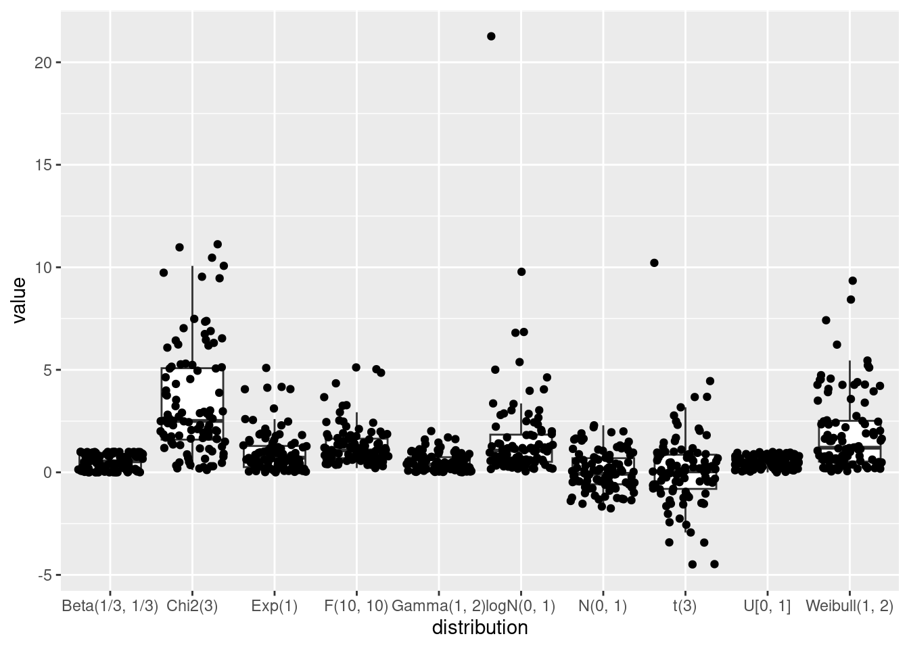
4.3 Distribution models for discrete random variables:
| Distribution | Abbreviation | Parameters | Wiki |
|---|---|---|---|
| Binomial | binom |
size, prob |
Link |
| Hypergeometric | hyper |
m, n,k |
Link |
| Negative binomial | nbinom |
size, prob,mu |
Link |
| Poisson | pois |
lambda |
Link |
| Geometric | geom |
prob |
Link |
| Multinomial | multinom |
size, prob |
Link |
N <- 100
set.seed(123)
A <- rbind(data.frame("distribution" = "Binomial(10, .5)", value = rbinom(n = N, size = 10, prob = .5)),
data.frame("distribution" = "Hyper(7, 3, 8)", value = rhyper(nn = N, m = 7, n = 3, k = 8)),
data.frame("distribution" = "NegBin(10, .5)", value = rnbinom(n = N, size = 10, prob = .5)),
data.frame("distribution" = "Poisson(3)", value = rpois(n = N, lambda = 3)),
data.frame("distribution" = "Geom(.5)", value = rgeom(n = N, prob = .5)))
ggplot(data = A, aes(x = distribution, y = value)) +
geom_boxplot(outliers = F) +
geom_jitter()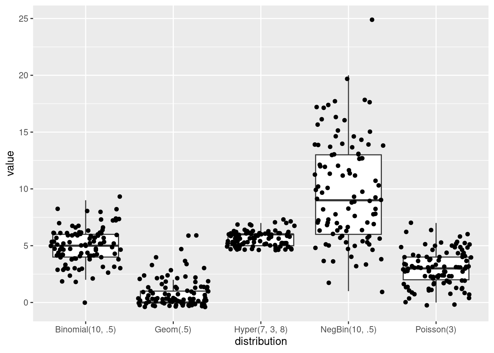
Multinomial:
A <- rmultinom(n = N, size = 10, prob = c(.1, .1, .8))
A <- rbind(data.frame("x" = "1",
"value" = A[1, ]),
data.frame("x" = "2",
"value" = A[2, ]),
data.frame("x" = "3",
"value" = A[3, ]))
ggplot(data = A, aes(x = x, y = value)) +
geom_boxplot(outliers = F) +
geom_jitter()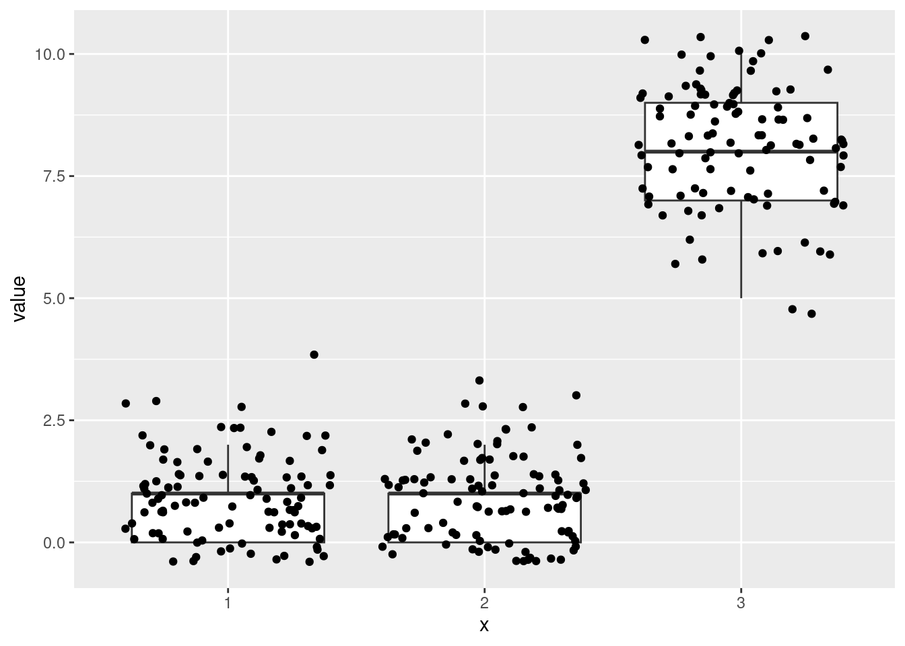
5 Generating ‘random’ numbers
- Random numbers are generated in R by an algorithm, they are not real random – whatever this is …
- Before a new random number is generated, this algorithm is in a certain state.
- The (next) random number depends on this state, drawing this new number alters the state.
RNGkind()lists three character strings for three tasks:kindis for draws from the continuous uniform distribution.normal.kindis for draws from the normal distribution (I don’t know why there’s this specific kind for the normal, I suppose as the normal distribution is historically so important, there have been algorithms specifically designed for drawing from this distribution …).sample.kindfor drawing from the diccrete uniform distribution.
- Why we won’t have a look on the other algorithms, seeing the idea behind
Inversionsampling is really helpful in order to see why being able to generate draws from continuous uniform distribution is already sufficient in order to sample from any other distribution. - Reproducibility is often an important property!
- The state of the random number generating algorithm is initialized by a seed.
- Seeds are generated by system time and session ID (
?RNG)
## [1] 7082## [1] "2024-06-19 14:27:31 CEST"## [1] "2024-06-19 14:27:31 CEST"## Time difference of 0.0006723404 secs- We can overwrite thus seed generating by using
set.seed():
## [1] 0.44941139 0.76616653 0.02609772 0.19517143 0.88123456## [1] 0.2875775 0.7883051 0.4089769 0.8830174 0.9404673## [1] 0.0455565 0.5281055 0.8924190 0.5514350 0.4566147## [1] 0.2875775 0.7883051 0.4089769 0.8830174 0.9404673- Generate random numbers using
r+ distribution abbreviation (uses inversion - sampling) - Random numbers from sets with
sample (c (), size, replace = TRUE).
## [1] "Mersenne-Twister" "Inversion" "Rejection"## [1] 1 1 1 0 1## [1] 0 1 0 1 0## [1] 1 1 1 0 1## [1] 5 4 1 6 2## [1] 10 5 4 5 45.1 Inversion-sampling
Inversion sampling is a rather simple application of a mathemcatical thing – the inverse of the cumulative distribution function – that one easily brands as ‘interesting only in mathematical theory’, but which has an incredibly applied value!
Let random variable \(X\) have cumulative distribution function \(F\).
Let’s assume for the moment we can draw random numbers from this distribution, eg. from the standard normal:
If we plug these into the cumulative distribution function
## `stat_bin()` using `bins = 30`. Pick better value with `binwidth`.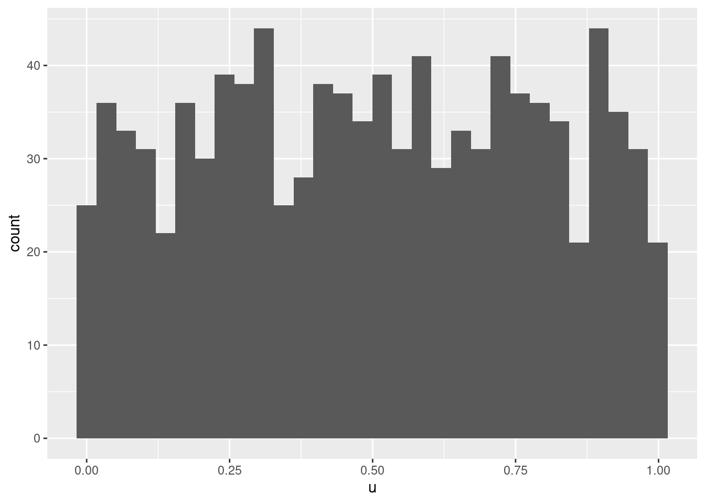
we obviously get random draws from the continuous uniform distribution \(U[0,1]\), ie. \(F(X)\sim\text{U}(0,1)\).
Now all we need to do is to solve this equation:
\[ F(X)=Z, Z\sim U[0,1] \] with respect to \(X\): \[ X=F^{-1}(Z), Z\sim U[0,1] \]
For application this means that as long as we can draw from a continuous uniform distribution, and as long as we can write down \(F^{-1}\), we can generate random draws for \(X\).
Inversion sampling:
- generate numbers \(u_1,\dots,u_n\) from the continuous uniform distribution \(U[0,1]\)
- transform \(x_k=F^{-1}(u_k)\)
In R, \(F^{-1}(u_k)\) is given as q....
## [1] -1.9728444 -1.2169369 -2.2157531 -0.8150545 2.4262442## [1] 0.02455568 0.11857422 0.01344418 0.23258871 4.87592939## [1] 2 3 2 4 96 Case study
6.1 Let’s invent a data generating machanism
Because of a drought in one year, trees grow less in this year in comparison to the preceding year. However, by differences in the availability to growth-ressources by different elevations at the same mountain range, this reduction is reversed above a certain elevation threshold.
## [1] 0.40 0.45 0.50 0.55 0.60 0.65 0.70 0.75 0.80 0.85 0.90 0.95 1.00 1.05 1.10
## [16] 1.15 1.20 1.25 1.30 1.35 1.40 1.45 1.50 1.55 1.60 1.65 1.70 1.75 1.80For species A and B:
muA <- .7 + .25 * elev
muB <- .8 + .15 * elev
paint <- colorspace::qualitative_hcl(n = 2)
ggplot(data = data.frame(k = rep(LETTERS[1:2], each = length(elev)),
mu = c(muA, muB),
elevation = c(elev, elev))) +
geom_line(aes(x = elevation, y = mu, color = k, group = k))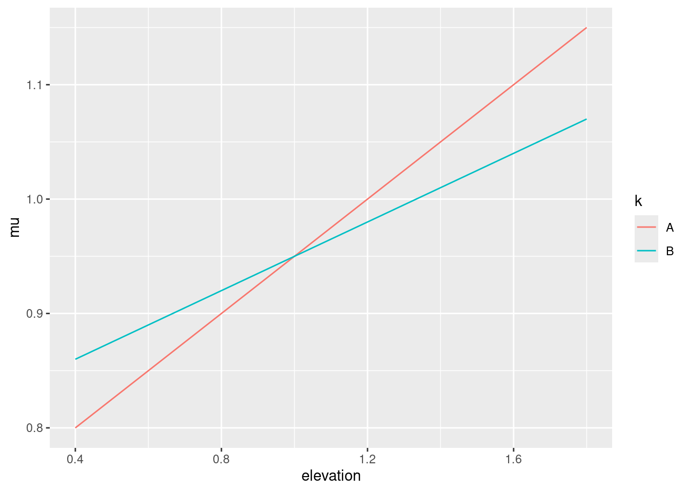
Random variation in site-specific availability to growth-ressources:
set.seed(123)
epsA <- rnorm(length(muA), sd = .05)
epsB <- rnorm(length(muB), sd = .05)
ggplot(data = data.frame(k = rep(LETTERS[1:2], each = length(elev)),
y = c(muA + epsA, muB + epsB),
elevation = c(elev, elev))) +
geom_point(aes(x = elevation, y = y, color = k, group = k))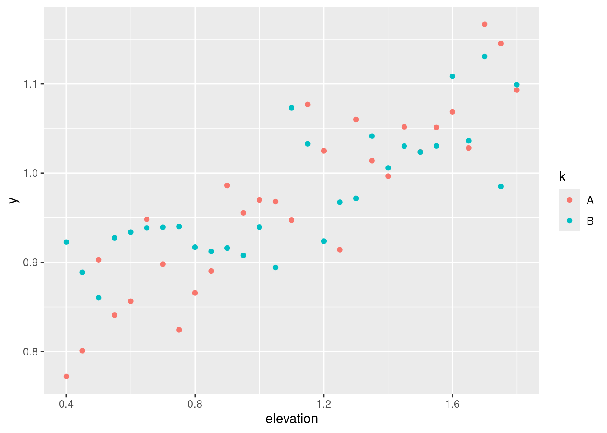
Compose outcome measurements y:
6.2 Introduction formula
formula notation for the data generating mechanism:
## Class 'formula' language yA ~ elev
## ..- attr(*, ".Environment")=<environment: R_GlobalEnv>## Length Class Mode
## 3 formula call## `~`()## yA()## elev()yAandyBare measured outcomes, written on the left hand side of the formula- The left hand side is separated from the right hand side by
~ - The right hand side expresses the explanatory variables that are either experimentally controlled, or – similar to the outcome – observed / measured. In our formula examples,
elevis the only explanatory variable. - The parameters used for generating the outcome,
.7,.25and.05for A, and.8,.15and.05for B, are not stated in the formula. Why? … because in real world applications, we don’t artificially invent, but rather want to estimate their plausible values based on our data. - Let’s assume it comes to our mind that a normal distribution is a statistical model that is quite useful to express the effects of variation in site-specific availability to growth-ressources on the outcome. Then:
We can use a formula directly for plot:
frmlaB <- as.formula(yB ~ elev)
plot(frmlaA, pch = "A", col = paint[1])
points(frmlaB, pch = "B", col = paint[2])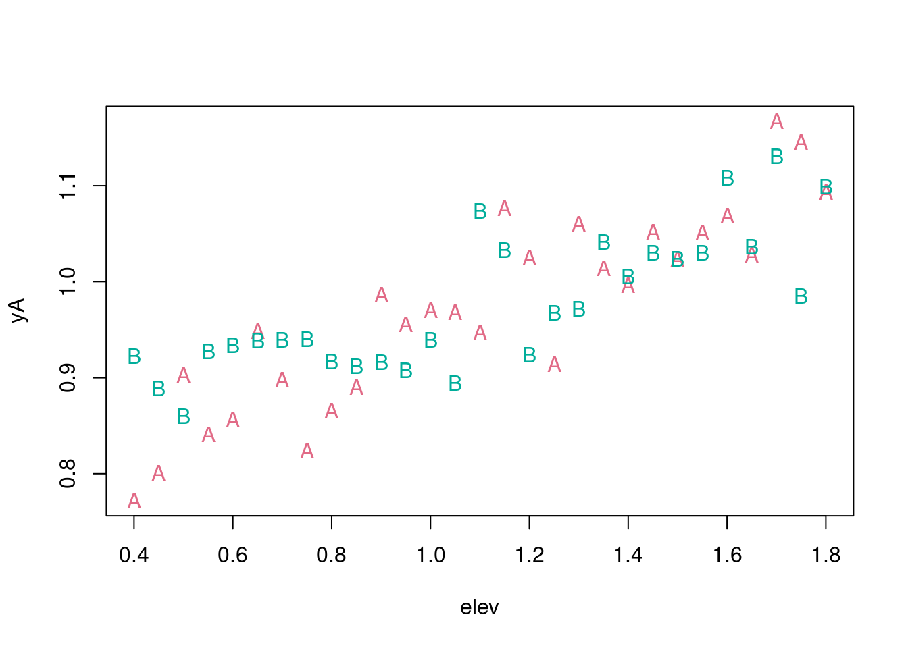
6.2.1 Using formula inside lm
mA <- lm(frmlaA)
mB <- lm(frmlaB)
par(mfrow = c(1, 2))
plot(frmlaA, pch = "A", col = paint[1])
abline(mA, col = paint[1])
points(frmlaB, pch = "B", col = paint[2])
abline(mB, col = paint[2])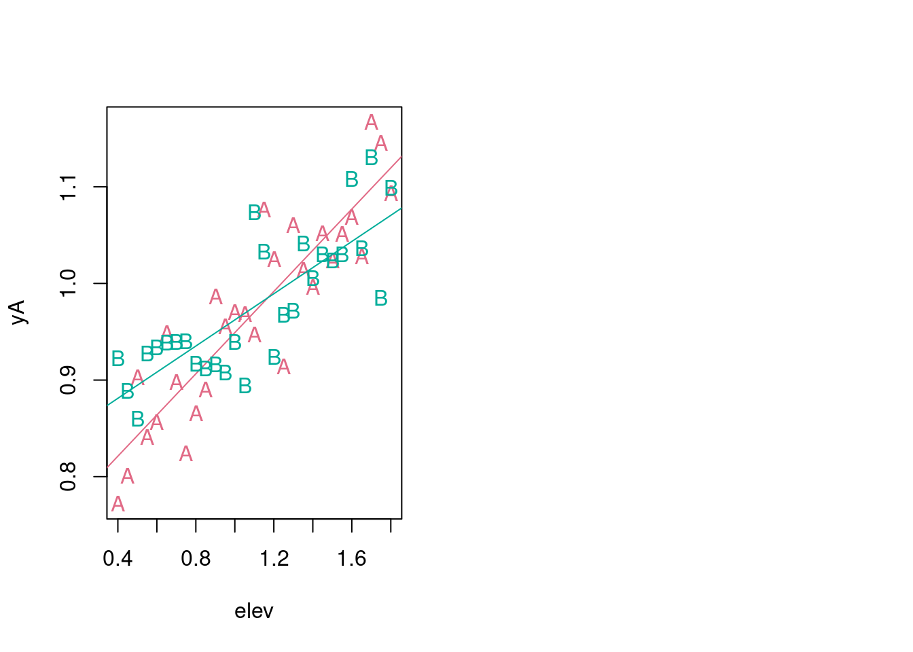
The data-generating mechanisms varied for varying species A, and B. Can we unify this into one description of a data-generating mechanism?
\[ yA=0.7+0.25\cdot\text{elev}+\texttt{rnorm(n=1, mu = 0, sd = .05)}\\ yB=0.8+0.15\cdot\text{elev}+\texttt{rnorm(n=1, mu = 0, sd = .05)}\\ \rightarrow y= 0.7+0.25\cdot\text{elev}+\texttt{(species == B)}\cdot(0.1-0.1\cdot\text{elev})+\texttt{rnorm(n=1, mu = 0, sd = .05)} \]
dfsim <- data.frame(y = c(yA, yB),
elev = c(elev, elev),
species = as.factor(rep(LETTERS[1:2], each = length(elev))))
dfsim$x <- dfsim$elev
## See: ?formula
frmla <- as.formula(y ~ x * species)
summary(frmla)## Length Class Mode
## 3 formula call## (Intercept) x speciesB x:speciesB
## 1 1 0.40 0 0
## 2 1 0.45 0 0
## 3 1 0.50 0 0
## 4 1 0.55 0 0
## 5 1 0.60 0 0
## 6 1 0.65 0 0## (Intercept) x speciesB x:speciesB
## 30 1 0.40 1 0.40
## 31 1 0.45 1 0.45
## 32 1 0.50 1 0.50
## 33 1 0.55 1 0.55
## 34 1 0.60 1 0.60
## 35 1 0.65 1 0.65## (Intercept) x speciesB x:speciesB
## 0.73593782 0.21314912 0.09105386 -0.077868566.3 Inspection of estimated parameters
## Lade nötiges Paket: MASS##
## Attache Paket: 'MASS'## Das folgende Objekt ist maskiert 'package:spatstat.geom':
##
## area## Lade nötiges Paket: Matrix##
## Attache Paket: 'Matrix'## Das folgende Objekt ist maskiert 'package:lmfor':
##
## updown## Lade nötiges Paket: lme4##
## Attache Paket: 'lme4'## Das folgende Objekt ist maskiert 'package:nlme':
##
## lmList##
## arm (Version 1.14-4, built: 2024-4-1)## Working directory is /home/hsennhenn/Dropbox/Schreibtisch/oer_introduction_to_R_2024##
## Attache Paket: 'arm'## Das folgende Objekt ist maskiert 'package:spatstat.geom':
##
## rescaletmp <- sim(m)
B <- cbind(tmp@coef, tmp@sigma)
colnames(B)[ncol(B)] <- "sigma"
df_draws <- data.frame("k" = factor(rep(colnames(B), each = nrow(B)), levels = colnames(B)),
"value" = as.numeric(B))
ggplot(data = df_draws, aes(x = k, y = value)) +
geom_boxplot()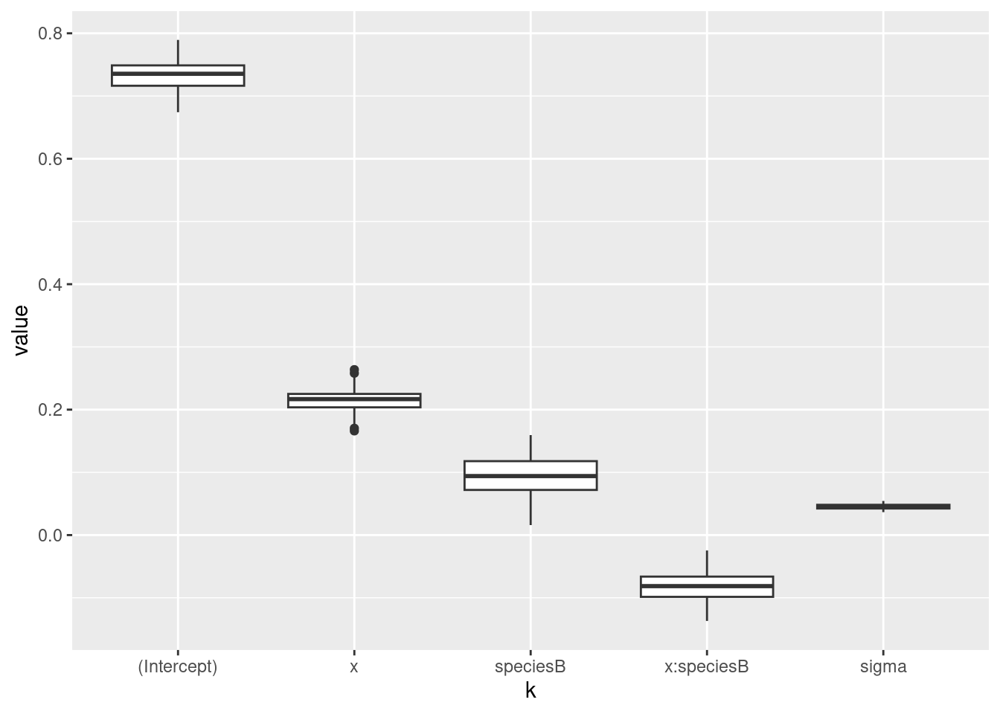
6.4 Predictive check
For only one data-point:
elev <- 1300 / 1000
species <- factor(c("A"), levels = levels(dfsim$species))
X <- model.matrix(frmla[-2], data = data.frame(x = elev, species = species))
X %*% B[1, -ncol(B)]## [,1]
## 1 1.015346## [1] 0.9899480 1.1019713 1.0041147 1.0777084 1.0207939 1.0035805 1.0309227
## [8] 0.9790030 1.0654185 0.9655213 1.0515324 1.0261213 1.0216022 1.0481515
## [15] 0.9765463 0.9598976 1.0021634 1.0701242 1.0414169 1.1183507 0.9699917
## [22] 1.0201318 1.1534332 1.0162380 1.0556141 1.0537146 1.0881090 1.0178440
## [29] 1.0697926 0.9364685 0.9813849 1.0188523 0.9886918 1.0254739 0.9378543
## [36] 1.0395219 0.9930987 0.9944408 1.0085548 0.9889237 0.9373617 1.0426293
## [43] 1.0165602 0.8777181 1.0653720 0.9841040 1.0241862 1.0285470 0.9678332
## [50] 0.9471550 1.0845774 1.1022373 1.0423772 1.0228742 1.0215433 1.0295161
## [57] 1.0029881 1.0627028 1.0466847 0.9884676 1.0209400 1.0170410 1.0183230
## [64] 1.0617957 0.9920905 1.0434989 1.0232035 1.0137752 1.0596489 1.0216063
## [71] 0.9658334 0.9573625 0.9998750 0.9829873 0.9593663 0.9856021 0.9328536
## [78] 0.9964383 0.9988052 1.0020665 1.0143018 1.0317154 0.9942652 1.0288297
## [85] 0.9723134 1.0454983 1.0192867 1.0104133 0.9847446 1.0920802 1.0327738
## [92] 1.0264920 0.8984973 0.9266750 1.0125771 1.0557838 1.0140788 0.9701887
## [99] 1.0081371 0.9915109For the full data-frame:
## [,1]
## 1 0.8222726
## 2 0.8329990
## 3 0.8437253
## 4 0.8544516
## 5 0.8651779
## 6 0.8759042## [1] 58 1Ytilde <- matrix(nrow = nrow(B), ncol = nrow(dfsim), NA)
for (s in 1:nrow(B)) {
tmp <- X %*% B[s, -ncol(B)]
for (i in 1:nrow(dfsim)) {
Ytilde[s, i] <- rnorm(n = 1, mean = tmp[i, 1], sd = B[s, ncol(B)])
}
}
tmp <- apply(Ytilde, MAR = 1, FUN = density)
plot(0, 0, ylim = c(0, max(sapply(tmp, FUN = function(x){return(max(x$y))}))),
xlim = c(min(sapply(tmp, FUN = function(x){return(min(x$x))})),
max(sapply(tmp, FUN = function(x){return(max(x$x))}))),
type = "n", bty = "n", las = 1, xlab = "y", ylab = "(Predictive) Density")
invisible(sapply(tmp, FUN = lines, col = colorspace::sequential_hcl(n = 1, alpha = .1)))
lines(density(dfsim$y), lwd = 4)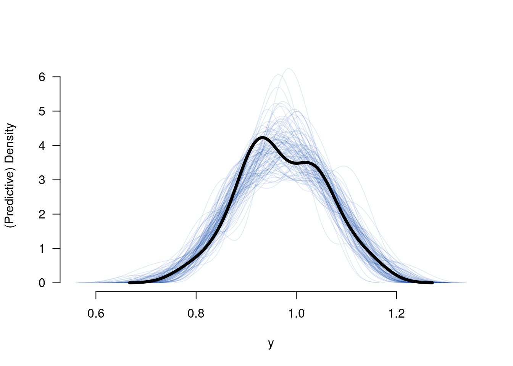
6.5 Model component mu
elev <- rep(c(400, 1800), 2) / 1000
species <- factor(rep(LETTERS[1:2], each = 2), levels = levels(dfsim$species))
(X <- model.matrix(frmla[-2], data = data.frame(x = elev, species = species)))## (Intercept) x speciesB x:speciesB
## 1 1 0.4 0 0.0
## 2 1 1.8 0 0.0
## 3 1 0.4 1 0.4
## 4 1 1.8 1 1.8
## attr(,"assign")
## [1] 0 1 2 3
## attr(,"contrasts")
## attr(,"contrasts")$species
## [1] "contr.treatment"Mu <- matrix(nrow = nrow(B), ncol = nrow(X), NA)
for (s in 1:nrow(B)) {
Mu[s, ] <- X %*% B[s, -ncol(B)]
}
paint <- colorspace::qualitative_hcl(n = 2, alpha = .1)
plot(range(elev), range(Mu), type = "n", las = 1, xlab = "Elev [m/1000]",
ylab = "Model component 'mu'", bty = "n")
for (s in 1:nrow(Mu)) {
lines(range(elev), Mu[s, 1:2], col = paint[1])
lines(range(elev), Mu[s, 3:4], col = paint[2])
}
lines(range(elev), .7 + .25 * range(elev), col = colorspace::qualitative_hcl(n = 2)[1], lwd = 4)
lines(range(elev), .8 + .15 * range(elev), col = colorspace::qualitative_hcl(n = 2)[2], lwd = 4)
lines(range(elev), coef(m)[1] + coef(m)[2] * range(elev), col = colorspace::qualitative_hcl(n = 2)[1], lwd = 4, lty = 2)
lines(range(elev), coef(m)[1] + coef(m)[3] + (coef(m)[2] + coef(m)[4]) * range(elev),
col = colorspace::qualitative_hcl(n = 2)[2], lwd = 4, lty = 2)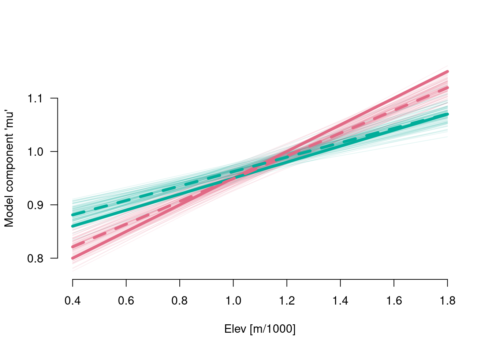
6.6 Real data
drought$x <- drought$elev / 1000
drought$y <- drought$bair
m <- lm(frmla, data = drought)
tmp <- sim(m)
B <- cbind(tmp@coef, tmp@sigma)6.6.1 Predictive check
## [,1]
## 1 0.4047765
## 2 0.4672026
## 3 0.4771908
## 4 0.4946701
## 5 0.5071554
## 6 0.5620903## [1] 34 1Ytilde <- matrix(nrow = nrow(B), ncol = nrow(drought), NA)
for (s in 1:nrow(B)) {
tmp <- X %*% B[s, -ncol(B)]
for (i in 1:nrow(drought)) {
Ytilde[s, i] <- rnorm(n = 1, mean = tmp[i, 1], sd = B[s, ncol(B)])
}
}
tmp <- apply(Ytilde, MAR = 1, FUN = density)
plot(0, 0, ylim = c(0, max(sapply(tmp, FUN = function(x){return(max(x$y))}))),
xlim = c(min(sapply(tmp, FUN = function(x){return(min(x$x))})),
max(sapply(tmp, FUN = function(x){return(max(x$x))}))),
type = "n", bty = "n", las = 1, xlab = "y", ylab = "(Predictive) Density")
invisible(sapply(tmp, FUN = lines, col = colorspace::sequential_hcl(n = 1, alpha = .1)))
lines(density(drought$y), lwd = 4)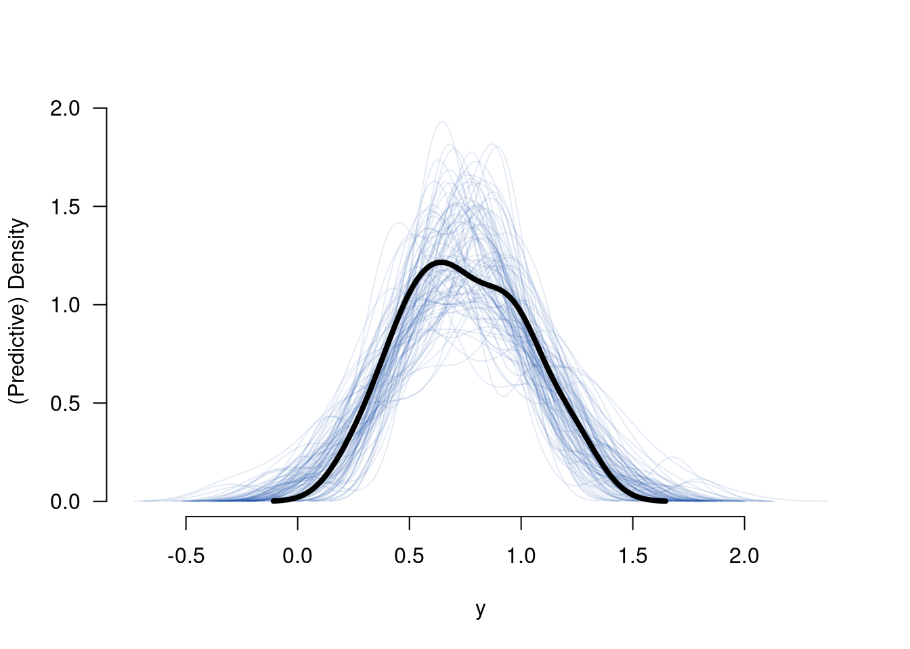
6.6.2 Model component mu
elev <- rep(c(400, 1800), 2) / 1000
species <- factor(rep(levels(drought$species), each = 2), levels = levels(drought$species))
(X <- model.matrix(frmla[-2], data = data.frame(x = elev, species = species)))## (Intercept) x speciesSpruce x:speciesSpruce
## 1 1 0.4 0 0.0
## 2 1 1.8 0 0.0
## 3 1 0.4 1 0.4
## 4 1 1.8 1 1.8
## attr(,"assign")
## [1] 0 1 2 3
## attr(,"contrasts")
## attr(,"contrasts")$species
## [1] "contr.treatment"Mu <- matrix(nrow = nrow(B), ncol = nrow(X), NA)
for (s in 1:nrow(B)) {
Mu[s, ] <- X %*% B[s, -ncol(B)]
}
paint <- colorspace::qualitative_hcl(n = 2, alpha = .1)
plot(range(elev), range(Mu), type = "n", las = 1, xlab = "Elevation [m/1000]",
ylab = "Model component 'mu'", bty = "n")
for (s in 1:nrow(Mu)) {
lines(range(elev), Mu[s, 1:2], col = paint[1])
lines(range(elev), Mu[s, 3:4], col = paint[2])
}
lines(range(elev), coef(m)[1] + coef(m)[2] * range(elev), col = colorspace::qualitative_hcl(n = 2)[1], lwd = 4, lty = 2)
lines(range(elev), coef(m)[1] + coef(m)[3] + (coef(m)[2] + coef(m)[4]) * range(elev),
col = colorspace::qualitative_hcl(n = 2)[2], lwd = 4, lty = 2)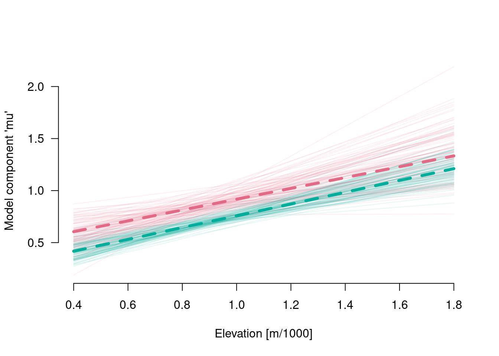
References
Private webpage: uncertaintree.github.io↩︎